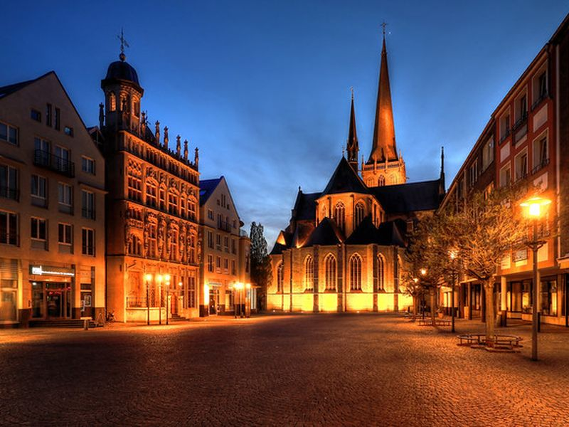
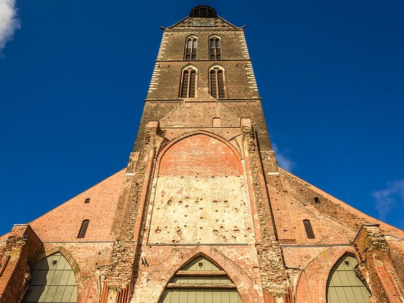
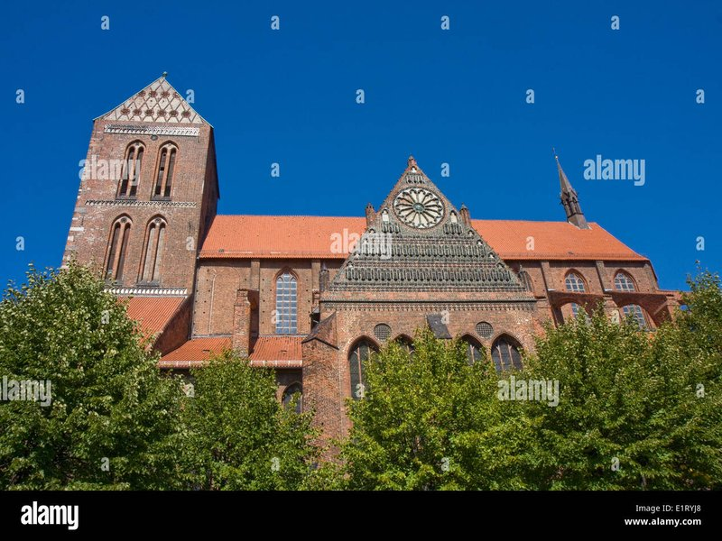
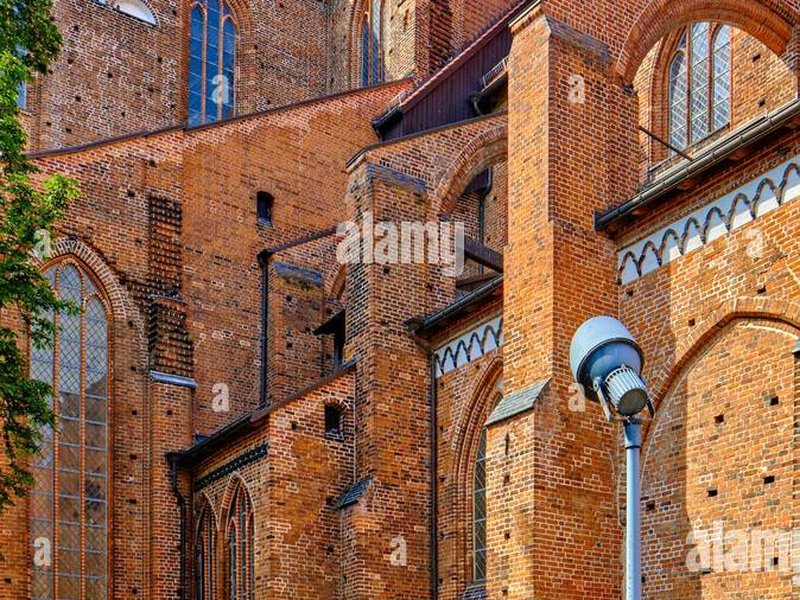
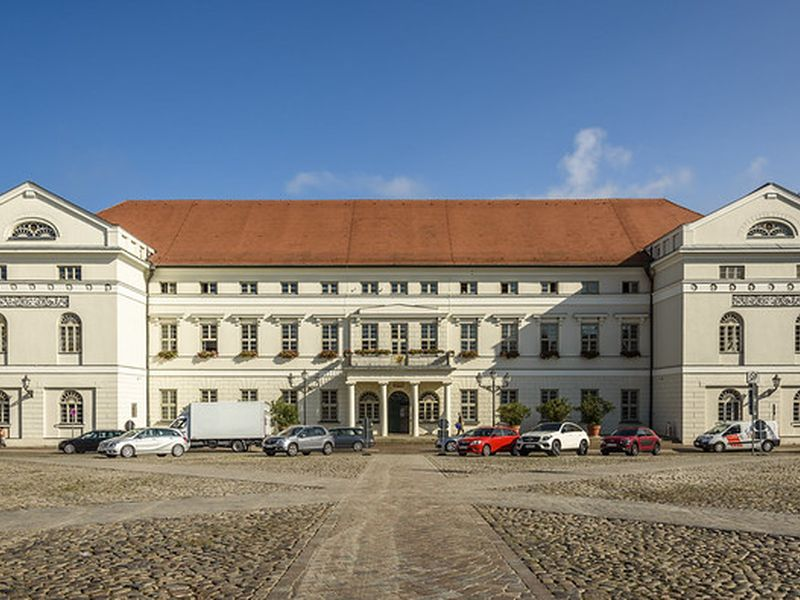
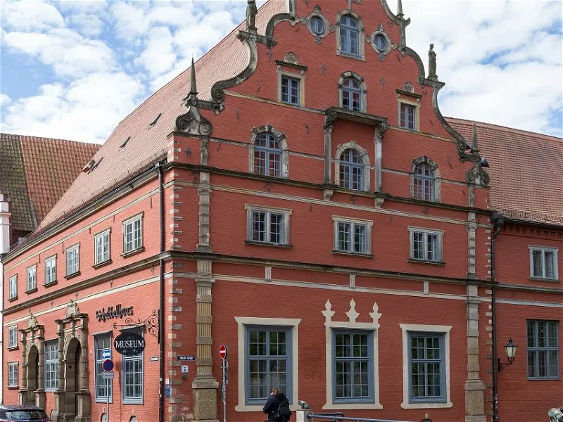

Explore Wismar
A Brief History
Wismar joined the Hanseatic League in the thirteenth century as a Baltic port exporting beer, salt, and herring from brick warehouses along the harbour. Swedish rule from 1648 to 1903 left fortifications, the Fürstenhof, and church towers that still define the old town after Mecklenburg union. Shipbuilding and reunification-era restoration revived the waterfront while UNESCO recognition underscores Wismar's surviving Hanseatic street grid on the Mecklenburg coast.
Attractions Map
Top Sights & Activities

Historic Market Place (Markt)
When step into the historic Markt (Market Place), are entering the heart of Wismar, a place that has served as the town’s social and commercial hub for centuries. Enclosed by medieval buildings, the square is a testament to Wismar’s significance in the Hanseatic League during the Middle Ages. This area often hosts local markets, events, and festivals, allowing to the lively community atmosphere firsthand.

St. Mary's Church (Marienkirche)
St. Mary’s Church stands as one of Wismar’s most important historical sites, although much of the church has been destroyed both by WWII and the Communist period afterwards. The big, 80-meter tall steeple from 1339 still remains and can climb to the top.

St. Nicholas Church (Nikolaikirche)
There are three fabulous red-brick churches that reigned in Wismar before World War II. St. Nicholas Church is the only one that survived and definitely a must-visit of the things to see in Wismar. The St. Nicholas Church (Nikolaikirche) forms part of Wismar's documented heritage within Germany.

St. George's Church (Georgenkirche)
The third of Wismar’s historical churches, St Georges was built between the 13th and 16th centuries. It was heavily damaged in WWII and was only re-built more recently. can visit inside the striking red-brick façade. The St. George's Church (Georgenkirche) forms part of Wismar's documented heritage within Germany.

Town Hall (Rathaus)
Wismar’s Town Hall is a large white and red building that stands as a symbol of the town’s rich history and governance. Built in the late Gothic style from 1817-1819, it’s home to the Rathaus Historical Exhibition in its basement that narrate Wismar’s evolution from a bustling trade center to a modern town. Exhibits include a mural from the 15th century and a tomb.

Wismar City Museum
At the Wismar City Museum (Stadtgeschichtliches), housed in the historic Schabbellhaus (built 1571), can learn the city’s long and captivating history. This museum showcases a diverse collection of exhibits that highlight Wismar’s maritime heritage, trade routes, and its important role in the Hanseatic League. With artifacts, historical photographs, and interactive displays, the museum brings to life the stories that shaped this fascinating town.